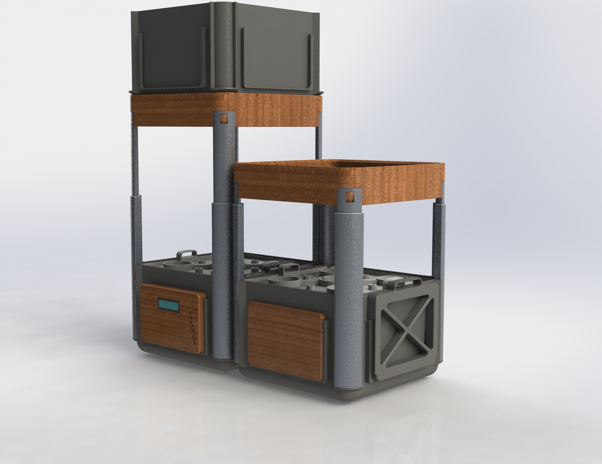
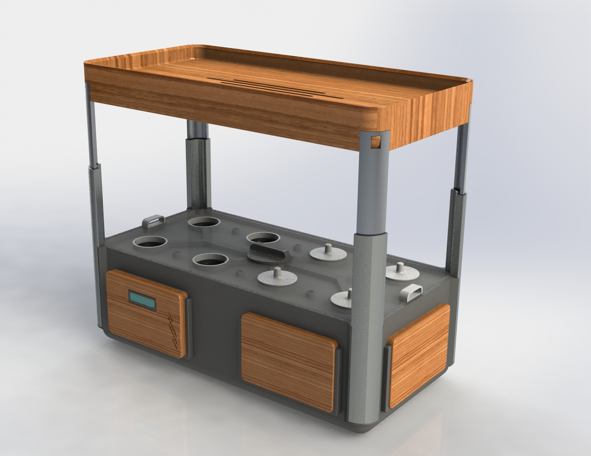
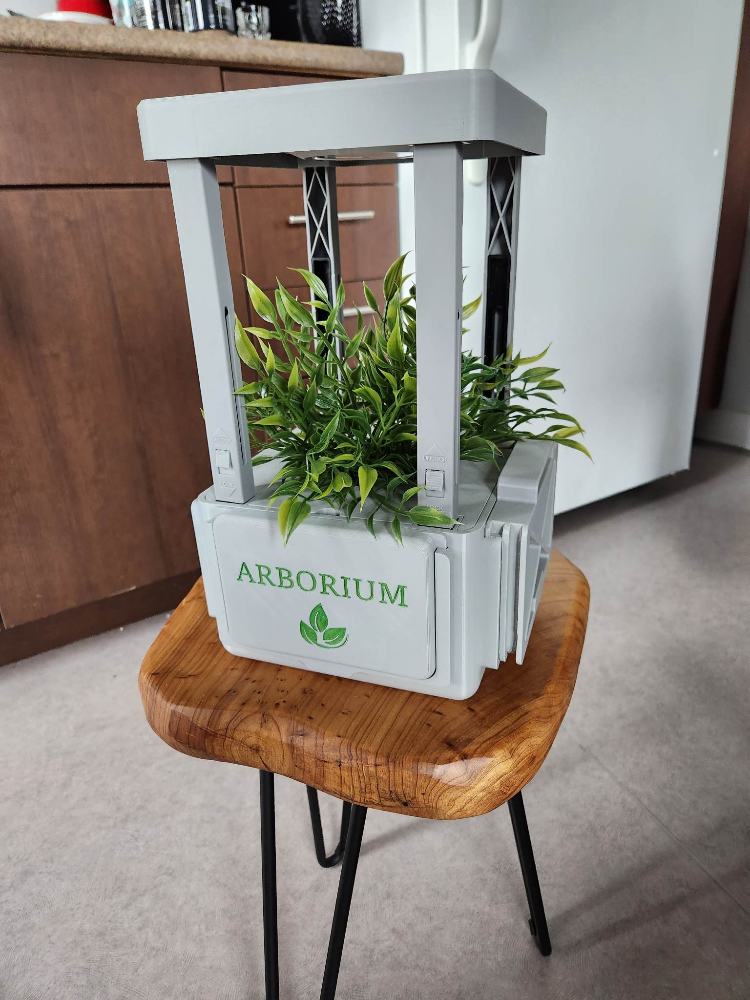
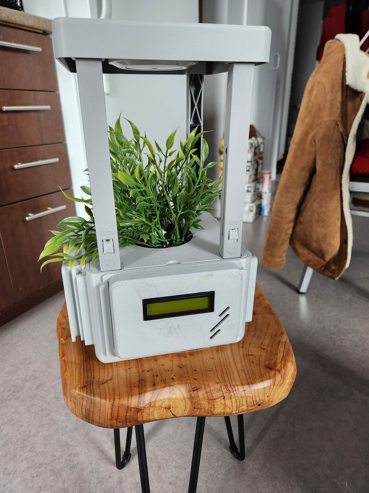
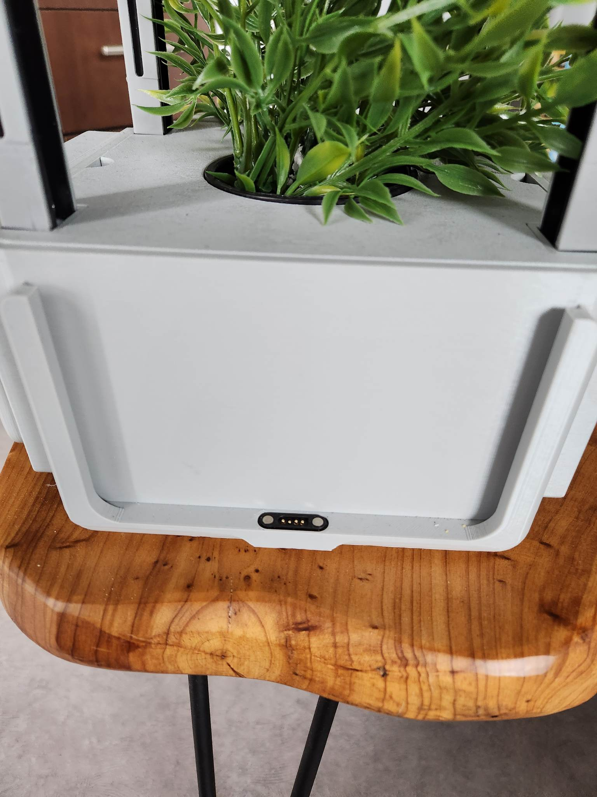

À propos du projet
Description
La station hydroponique modulaire a été développée dans le cadre de la compétition entrepreneuriale des Jeux de génie 2023.
L'objectif était de développer un produit innovant basé sur les principes de l'économie circulaire, tout en démontrant sa faisabilité technique et en développant un modèle d'affaires viable.
Notre équipe a développé un système hydroponique modulaire conçu pour être facilement agrandi et adapté à différentes configurations.
Nous avons finalement obtenu la 4e place lors de la compétition.
Mon rôle
Au sein d'une équipe de six personnes, j'étais responsable de la conception électrique et du prototypage du projet, ainsi que de la planification du processus de fabrication pour une production à plus grande échelle.
J'ai conçu et réalisé le circuit électrique utilisé dans le prototype et développé l'architecture modulaire du système.
En tant que seul membre de l'équipe spécialisé en génie électrique, j'étais également responsable de répondre aux questions liées à l'électricité et d'accompagner les autres membres de l'équipe dans les décisions techniques concernant le système électronique.
Technologies
- Programmation
- C/C++
- Logiciels & Ressources
- Arduino IDE
Photos & Videos




